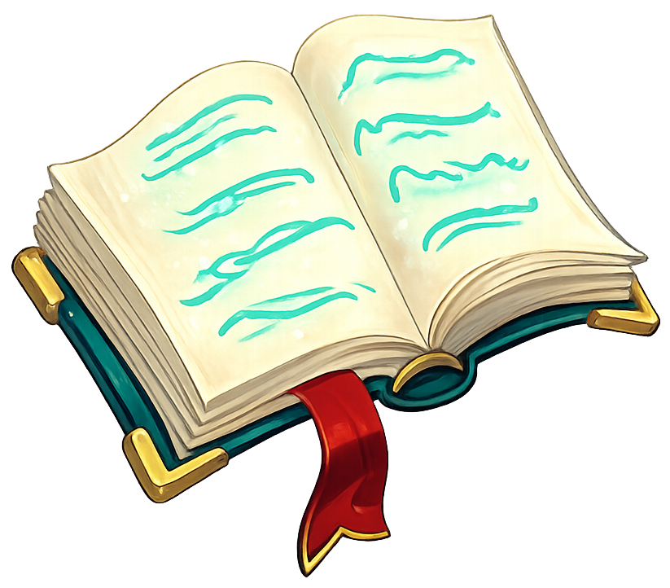

Tout ce qu'il faut savoir sur la gestion des familiers et outil d'aide à l'élevage de familiers.

Tout sur les familiers : leur temps de repas et type de nourriture.
Outil d'aide à la gestion d'élevage de familiers : quand nourrir nos compagnons et avec quoi.